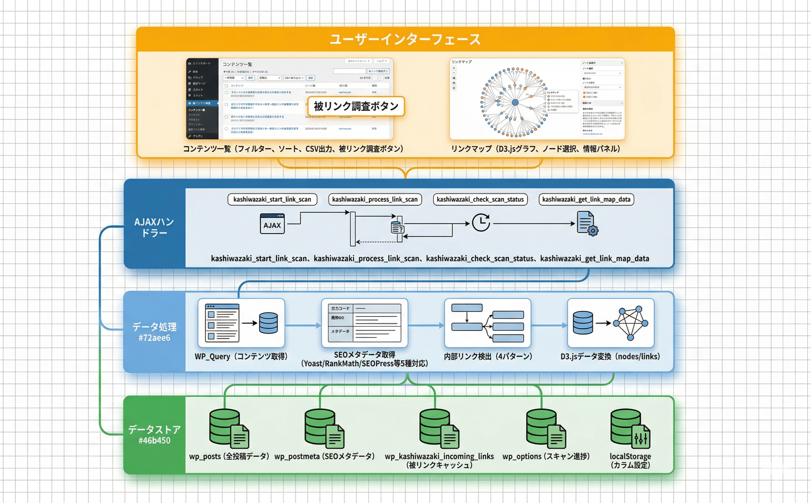

トラブルシューティング
よくある問題とその解決方法をまとめています。
よくある問題と解決策
被リンクスキャンが途中で止まる
原因: AJAXリクエストのタイムアウトまたはサーバーのメモリ不足が考えられます。
ブラウザのコンソール（F12キー）でエラーメッセージを確認する
WordPressの wp-config.php でメモリ上限を確認する（WP_MEMORY_LIMIT）
サーバーのPHP max_execution_time 設定を確認する（推奨: 300秒以上）
ページをリロードして再度「被リンクを調査する」ボタンをクリックする（中断した箇所から再開されます）
バッチ処理は10記事ずつ実行されるため、1回のリクエストがタイムアウトしても全体が失敗するわけではありません。
リンクマップが表示されない（空白）
原因: D3.jsライブラリの読み込み失敗、または被リンクスキャンが未実行です。
先に「コンテンツ一覧」ページで被リンクスキャンを実行する
ブラウザのコンソールでD3.jsの読み込みエラーがないか確認する
CDN（https://d3js.org/d3.v7.min.js）へのアクセスが遮断されていないか確認する
D3.jsは外部CDNから読み込まれます。社内ネットワーク等でCDNへのアクセスが制限されている場合、リンクマップは表示できません。
カラム表示設定がリセットされる
原因: ブラウザのlocalStorageがクリアされた可能性があります。
ブラウザのプライベートモード（シークレットモード）を使用していないか確認する
ブラウザのキャッシュや履歴を削除した場合、localStorage もクリアされます
カラム設定はブラウザのlocalStorageに保存されるため、別のブラウザや別のPCでは設定が共有されません。
CSV出力で文字化けする
原因: エンコーディングの選択がアプリケーションと合っていません。
Excelで開く場合は「Shift-JIS」を選択してダウンロードする
Google スプレッドシートや最新のExcelで開く場合は「UTF-8」を選択する
それでも文字化けする場合は、テキストエディタで開いてエンコーディングを確認する
UTF-8版にはBOM（Byte Order Mark）が付与されており、最新のExcel（2016以降）で正しく認識されます。
被リンク数が0と表示される
原因: 被リンクスキャンが未実行、または他の記事からリンクされていない可能性があります。
「コンテンツ一覧」ページで「被リンクを調査する」ボタンをクリックしてスキャンを実行する
スキャン完了後、「最終調査」の日時が更新されていることを確認する
実際に他の記事からリンクされているか、記事の編集画面で確認する
動作要件
| 項目 | 要件 |
|---|---|
| WordPress | 5.0 以上 |
| PHP | 7.2 以上 |
| ブラウザ | Chrome, Firefox, Safari, Edge（最新版） |
| 外部ライブラリ | D3.js v7（CDNから自動読み込み） |
| 権限 | edit_posts 以上 |
技術仕様
- データ保存: カスタムテーブル
wp_kashiwazaki_incoming_links（被リンクキャッシュ） - 設定保存: wp_options（
kashiwazaki_link_scan_*キー、スキャン進捗管理用） - カラム設定: ブラウザ localStorage（ユーザーごと）
- バッチ処理: AJAXベース、10記事/リクエスト、クライアントサイドポーリング（100ms間隔）
- グラフ描画: D3.js v7 フォースシミュレーション（CDN:
https://d3js.org/d3.v7.min.js） - SEO連携: Yoast SEO / All in One SEO / Rank Math / SEOPress / Kashiwazaki SEO のメタデータを自動取得
- セキュリティ: nonce検証、capability チェック（edit_posts）、
$wpdb->prepare()によるSQLインジェクション対策 - CSV出力: UTF-8（BOM付き）/ Shift-JIS 対応、
mb_convert_encoding使用 - アーキテクチャ: シングルトンパターン、単一PHPファイル構成
